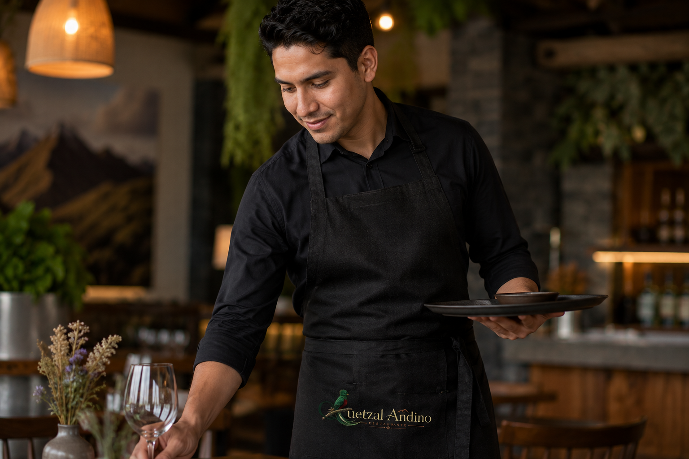

Donde la tradición se encuentra con la vanguardia
Una reinterpretación contemporánea de los sabores de los Andes
Reservar una mesa



Sabores que Narran el Territorio
En Quetzal Andino, la cocina no es solo un acto de preparar alimentos; es un ejercicio de memoria y exploración. Tomamos la generosidad de nuestras montañas y la traducimos a un lenguaje contemporáneo, donde cada ingrediente respeta su origen pero desafía la forma en que lo percibimos.
Aquí, los saberes ancestrales de nuestros abuelos se encuentran con la precisión técnica de la vanguardia, creando una atmósfera donde la elegancia de lo moderno convive en armonía con la pureza de lo natural.
Nuestra Propuesta Gastronómica


Nuestra Bodega y Coctelería


Nuestra propuesta de vinos


Nuestra Propuesta de Bebidas Artesanales


Reserve su mesa con nosotros

Nuestra raíz: entre la tierra y la vanguardia
Quetzal Andino nació de una obsesión: encontrar la elegancia en lo esencial. Nos inspiramos en la biodiversidad de nuestras cordilleras, donde cada ingrediente desde la arracacha de los valles boyacenses hasta los cítricos de las estribaciones selváticas cuenta una historia de siglos. Nuestro nombre no es azar; rinde homenaje a la libertad y a la belleza vibrante de los Andes, valores que decidimos llevar a la mesa.
Entendemos la cocina como un diálogo entre la memoria y el futuro. Respetamos los procesos ancestrales, como la fermentación en chicha o los braseados lentos, pero los elevamos con técnicas de alta cocina moderna. Aquí, el campo no solo se sirve, se transforma. Nuestro equipo busca constantemente el equilibrio perfecto donde el sabor crudo de la montaña se encuentra con la delicadeza de un emplatado de autor.
No buscamos solo alimentar, buscamos crear un paisaje sensorial. Cada visita a Quetzal Andino es una invitación a explorar nuestra geografía a través de texturas, aromas y una hospitalidad que se siente como en casa, pero se sirve con el rigor de un restaurante de mundo. Bienvenidos a nuestra mesa; bienvenidos a la esencia de los Andes.